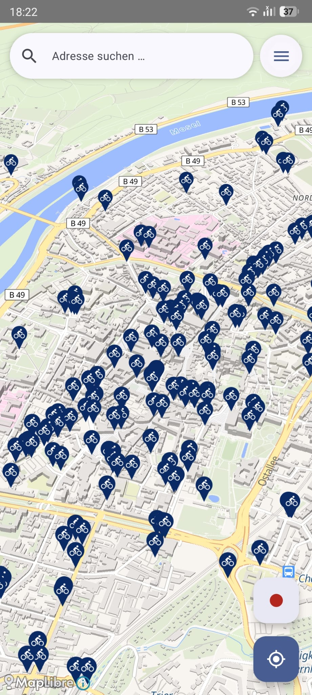
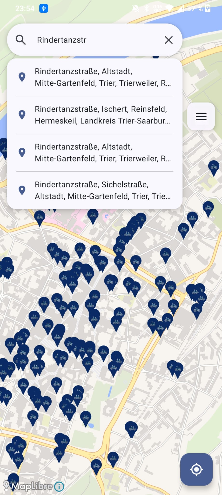
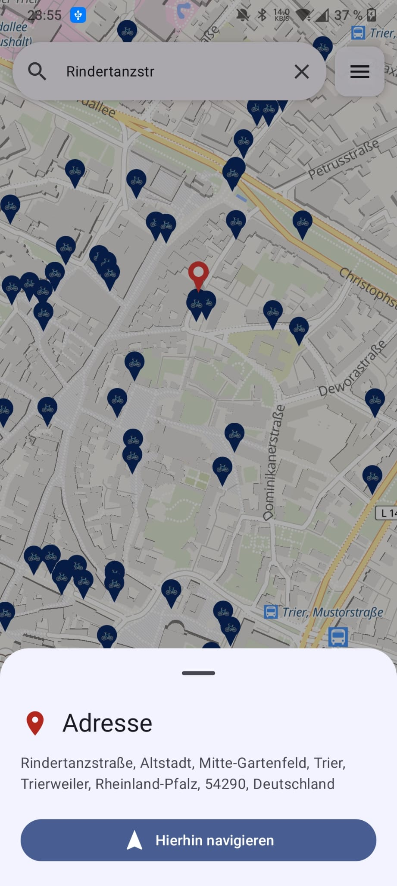
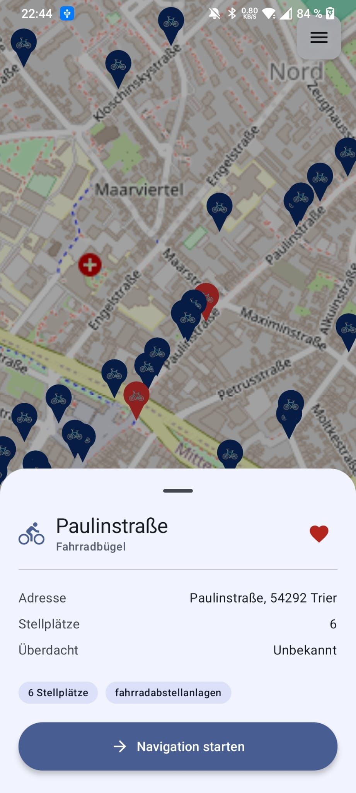
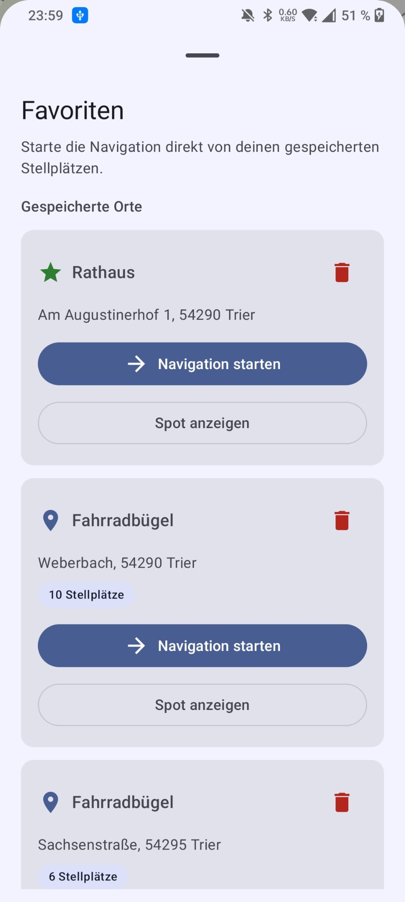
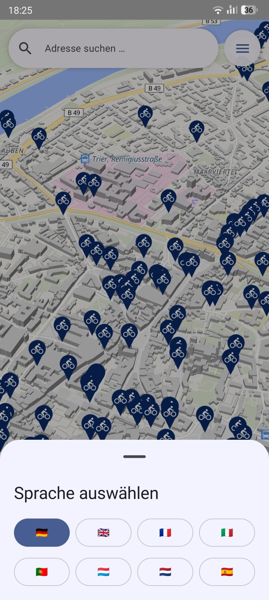
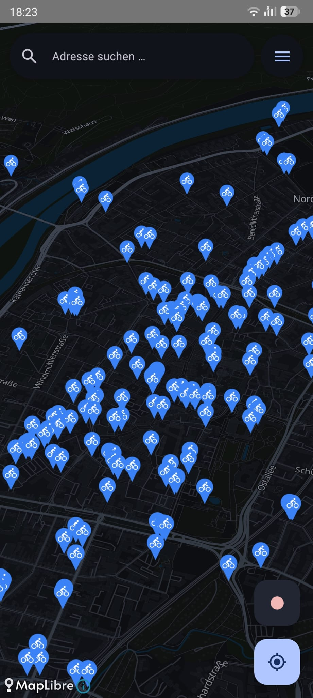
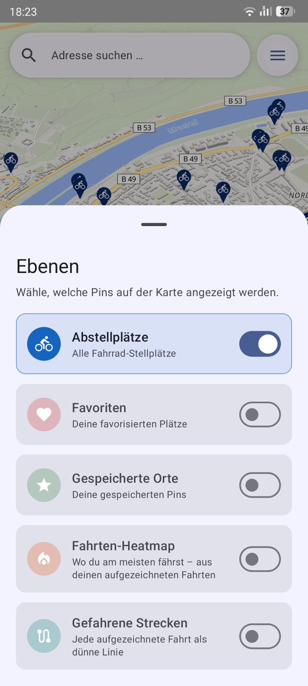

100 000+ parking locations from OpenStreetMap — bundled offline, available instantly, anywhere in Germany. Tap the map to place a custom pin and navigate there, use address search powered by Nominatim, MapLibre vector tile map, BRouter on-device routing, 5 cycling profiles, favorites, dark mode, and 8 languages included.
Type any German address into the floating search bar to get up to 5 live Nominatim suggestions. Tap a result to drop a pin and open the same sheet as a custom pin — start in-app BRouter navigation, save it as a favourite, or remove the pin.
Tap any empty spot on the map to drop a blue custom pin. The address is resolved instantly via Nominatim reverse geocoding and a bottom sheet lets you start in-app bike navigation directly to that exact location.
100 000+ bicycle parking locations from OpenStreetMap — pre-bundled as a SQLite asset, available offline from the very first launch.
Only the markers visible in the current map area are queried. Scroll from Flensburg to Munich without any slowdowns.
At city-level zoom, dense parking pins are aggregated into native MapLibre clusters for a fast, uncluttered map. Tap a cluster to zoom in and break it apart.
All parking data is bundled inside the APK. No network call is needed to find and browse parking spots.
Tap a marker and its address is resolved automatically via Nominatim — cached permanently so subsequent opens are instant.
Silky-smooth vector tile rendering via MapLibre and OpenFreeMap Liberty style — no API key needed, sharp at every zoom level, and ready for custom dark-mode styles.
Browse bike parking spaces on an intuitive vector map with clear markers and quick detail access.
Save the parking spots you use most often and launch navigation directly from the favorites list — even if they are outside the current viewport.
Switch between German, English, French, Italian, Portuguese, Luxembourgish, Dutch, and Spanish via a flag-based picker — the choice is remembered across app restarts.
Enable dark mode and the entire map switches to a bundled dark vector-tile style that reuses the same OpenFreeMap tiles — no extra tile provider, with brighter, higher-contrast markers for night use.
Show or hide pin categories independently — parking spots, favourites, and saved places — via an intuitive layers sheet. The selection persists across restarts.
Save any tapped location as a named favourite. Saved places appear as persistent green star markers and live in the favourites list with navigate and show-on-map actions.
Calculate bike routes directly inside the app and follow a live route overlay without switching to an external map app.
A mitlaufende, Google-Maps-style 3D follow camera (60° pitch, heading-up, speed-dependent zoom) snaps your position onto the route, rotates a heading arrow with your direction of travel, greys out the path behind you, raises 3D buildings, counts down the live remaining distance + ETA, and reroutes automatically when you go off-route.
Pick a flat top-down map or a tilted 3D view with extruded buildings from a sleek segmented selector — the choice is remembered. Active navigation always uses the full 3D camera.
Routes calculated entirely on-device via the embedded BRouter engine — no internet needed after the one-time ~200–250 MB segment download. Choose from 5 cycling profiles: Trekking, Fast, Shortest, MTB, and Gravel.
While navigation is active, non-destination markers appear smaller, lighter gray, and more transparent so your target stands out.
VeloSpot bundles the complete OpenStreetMap bicycle parking dataset for Germany into a pre-populated SQLite database. All 100 000+ spots are available offline from first launch, with smooth viewport-based loading and automatic address resolution.
100 000+ Locations · Fully Offline
OpenStreetMap · Room Asset DB · Nominatim (Reverse + Forward Geocoding) · MapLibre Vector Tiles · BRouter Offline Routing · OSRM Fallback

City-wide or country-wide — browse 100 000+ parking spots across Germany.

Type any German address to get live suggestions powered by Nominatim and navigate straight there.

Tap any spot on the map to drop a custom pin, get the address automatically, and start in-app bike routing.

See capacity, address, and operator, then jump straight into navigation.

Save your most-used spots and start navigation directly from the favourites sheet.

Choose from 8 languages in-app via the flag-based language picker.

A bundled dark vector-tile style that reuses the same OpenFreeMap tiles — the whole map turns dark alongside the app theme, with higher-contrast markers.

Show or hide each pin category independently — parking spots, favourites, and saved places — from an intuitive layers sheet. Your choice is remembered.
Clone the project, build the Android app, and enjoy 100 000+ parking spots offline — plus tap-to-place custom pins, address search via Nominatim, MapLibre vector tile map, BRouter on-device routing, 5 cycling profiles, favorites, multilingual support, and dark mode.